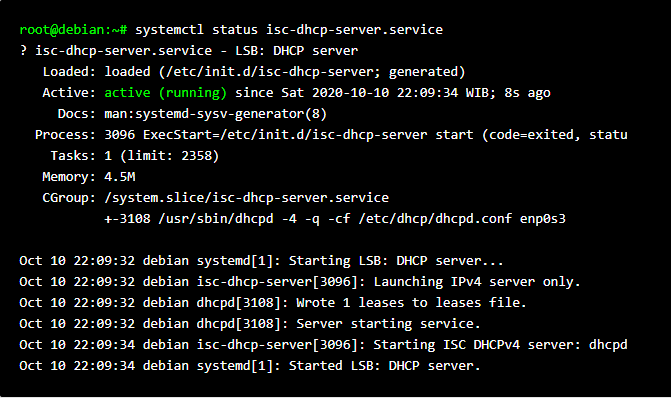

Bagaimana langkah-langkah cara install Debian? Sebelum membahas tentang hal tersebut, anda harus tahu terlebih dahulu apa itu Debian. Bagi anda yang selalu bersentuhan dengan dunia server tentu tidak asing lagi dengan nama yang satu ini. Debian adalah salah satu sistem operasi Linuc atau GNU yang bersifat universal atau umum yang bisa anda gunakan untuk kebutuhan apa saja sesuai dengan keinginan anda. Debian pertama kali dikembangkan pada sekitar 1993.
Sistem operasi Debian merupakan sistem operasi yang bersifat open source. Artinya, anda tidak perlu lagi memerlukan serial number karena memang anda tidak perlu mendownload atau bahkan membeli serial numbernya. Tentunya kelebihan inilah yang membuat banyak orang mulai beralih menggunakan Debian. Selain itu, tampilannya juga cukup menarik dan tidak membosankan.
Belum lagi dengan kelebihan lain yang dimiliki oleh Debian yang terkenal memiliki sistem keamanan yang cukup tinggi. Selain itu, anda juga tidak memerlukan antivirus karena memang pada dasarnya sistem operasi Linux tidak harus menggunakan antivirus karena virus tidak akan bisa masuk.
Langkah-Langkah Instalasi Debian 10 di VirtualBox
1. Langkah pertama, login ke debian dengan menggunakan user root.

2. Beri nama pada mesin virtual anda kemudian pilih Next.

3. Untuk ukuran memori (RAM) yang digunakan pada mesin virtual anda, saya sarankan 1024MB namun jika spesifikasi laptop / komputer anda pas-pasan, 512MB juga tidak apa-apa. Selanjutnya pilih Next.

4. Setelah itu kita membuat harddisk virtual untuk menyimpan data dan file mesin virtual kita. Pilih Create a virtual hard disk now kemudian pilih Create.

5. Setelah itu pilih VDI (VirtualBox Disk Image).

6. Selanjutnya pilih dynamically allocated kemudian pilih Next.

7. Untuk ukuran harddisk virtual yang digunakan, 10GB sudah lebih dari cukup. Setelah itu pilih Create.

8. Setelah selesai membuat mesin virtual, selanjutnya kita perlu melakukan sedikit pengaturan. Pilih mesin virtual yang telah kita buat tadi (DEBIAN 10) kemudian pilih Settings untuk masuk ke menu pengaturan.

9. Pada menu Settings, kita pilih Storage. Kemudian pada bagian Controller: IDE, pilih Empty kemudian klik ikon CD seperti yang ditunjuk tanda panah. Pilih file ISO Debian 10 yang sebelumnya sudah anda download.

10. Jika file ISO Debian 10 berhasil ditambahkan, tampilannya nanti kurang lebih seperti ini. Selanjutnya pilih OK.

11. Pilih Start untuk memulai proses instalasi.

12. Berikut ini tampilan awal instalasi Debian 10. Pilih Install.
13. Pilih English.

14. Untuk pilihan lokasi dan zona waktu, langsung tekan Enter. Nanti bisa diubah setelah selesai proses instalasi.

15. Pilih American English, kemudian Enter.

16. Ketikkan nama hostname-nya, bebas kok. Kemudian pilih Continue.

17. Masukkan nama domain yang diinginkan, misal nesabamedia.com. Kemudian pilih Continue.

18. Masukkan password untuk root. Gunakan password yang mudah diingat saja. Kemudian pilih Continue.

19. Masukkan kembali password root, lalu pilih Continue.

20. Masukkan nama lengkap untuk pengguna baru anda, misal: zakaria juga tidak apa-apa, tidak harus nama lengkap. Pengguna ini merupakan pengguna biasa, berbeda dengan root yang bisa disebut sebagai administrator yang mempunyai hak dan akses yang lengkap. Jika sudah, pilih Continue.

21. Masukkan username, samakan dengan nama pengguna saja biar tidak bingung. Lalu pilih Continue.

22. Masukkan password untuk pengguna baru. Kalau saya biasanya saya buat sama dengan password root, biar tidak lupa. Selanjutnya pilih Continue.

23. Masukkan kembali passwordnya, kemudian pilih Continue.

24. Pemilihan zona waktu biarkan default dengan menekan Enter, nanti bisa diubah kok.

25. Pada tahap partisi harddisk, pilih Guided – use entire disk.

26. Pilih harddisk yang ingin dipartisi kemudian Enter.

27. Pembagian partisi yang standar dan sering digunakan, minimal terdapat partisi home, var dan tmp. Maka dari itu, pilih Separate /home, /var, and /tmp partitions.

28. Selanjutnya pilih Finish partitioning and write changes to disk.

29. Jika muncul tampilan seperti ini, silakan pilih Yes.

30. Pada langkah ini, pilih No.

31. Pilih No pada langkah ini.

32. Selanjutnya Pilih No lagi.

33. Disini saya ingin menginstall linux berbasis CLI (terminal) karena lebih ringan. Namun jika anda ingin menggunakan yang versi dekstop (GUI) silakan pilih Debian desktop environment dengan cara menekan tombol spasi. Setelah itu pilih Continue.

34. Pilih Yes untuk instalasi GRUP boot loader.

35. Pilih /dev/sda… (nama harddisk anda yang kurang lebih seperti gambar dibawah) kemudian tekan Enter.

36. Proses instalasi Linux Debian 10 sudah berhasil, terakhir pilih Continue.

37. Yey, berikut tampilan Linux Debian anda yang berbasis CLI.

Oke Demikian kira-kira tutorial Cara Install Debian 10 ini. Semoga bermafaat untuk kita semua. Silahkan Share Jika kalian merasa postingan ini bermanfaat. Sekian & Terimakasih Salam.